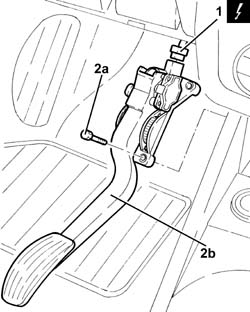

1068A18 ACCELERATOR PEDAL WITH BUILT-IN POTENTIOMETER - R R
- Path
- Procedures > 10 ENGINE UNIT > 1068 ACCELERATOR CONTROLS > 1068A ACCELERATOR PEDAL CONTROL > 1068A18 ACCELERATOR PEDAL WITH BUILT-IN POTENTIOMETER - R R
- Kind
- repair procedure (removal / refitting; the operation number is the code)
- Applies to
- engines: 2.0 JTS; all production periods; only with equipment: Smart gearbox
- Interactive page
- https://sloeber94.github.io/elrnDB-aGt/en/#/125001072
Applies to: engines: 2.0 JTS; all production periods
 Removing
Removing
 Refitting
Refitting- Make sure that the ignition key is in the OFF position, then disconnect the battery terminal (-).
Description | Connector | |
|---|---|---|
- | Battery | See A001 Battery |
1. Disconnect the electrical connection from the accelerator pedal potentiometer.
Description | Connector | |
|---|---|---|
- | Accelerator pedal potentiometer | See K55 ACCELERATOR PEDAL POTENTIOMETER |
2. Undo the bolts (2a) and remove the accelerator pedal with built in potentiometer (2b).

Applies to: engines: 2.0 JTS; all production periods
Refitting
Removing- Place the accelerator pedal with built in potentiometer back in its housing and secure it using the bolts.
- Connect the electrical connection to the accelerator pedal potentiometer.
- Connect the negative battery terminal (-).